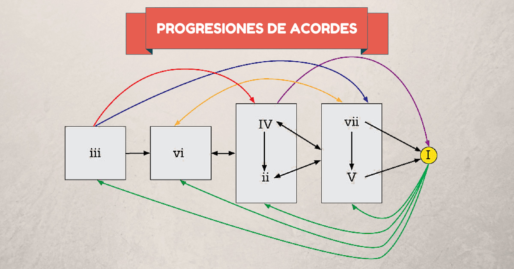

En la música popular existen algunas progresiones que se repiten en miles de canciones. En esta publicación te dejo 5 progresiones de acordes en guitarra, en cuatro tonalidades diferentes. Te ayudarán a aprenderte canciones mucho más fácil. Piensa en estas progresiones como plantillas de acordes muy utilizadas en cualquier género.
Un acorde mayor, menor o disminuido no tiene ningún valor narrativo si se aísla. Pero incluso las progresiones de acordes simples y repetitivas tienen el poder para crear un complejo conjunto de emociones e ideas musicales. Con una buena progresión como base, otros elementos de tu canción—como la melodía principal o la línea de bajo—son mucho más fáciles de crear, en gran parte gracias a esta base. Si te estás preguntando cómo escribir una canción y no sabes por dónde empezar tu arreglo, las progresiones de acordes son el mejor punto de partida.
